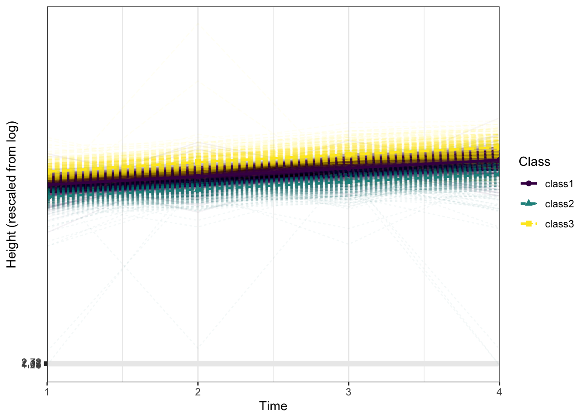

Latent Class Growth Analysis
Overview
Latent Class Growth Analysis (LCGA) is a specialized form of growth modeling that identifies distinct subgroups within a population based on their trajectory patterns over time. Unlike traditional growth models that assume a single underlying growth trajectory for all individuals, LCGA allows for the identification of multiple latent classes, each characterized by its own unique growth path. This method is particularly useful for uncovering heterogeneous patterns of change that might be obscured in an overall population analysis.
This example focuses on exploring the developmental trajectories of height across several annual assessments in a cohort from the ABCD Study. Employing LCGA provides the ability to categorize participants into distinct groups based on their growth patterns in height from baseline to subsequent follow-ups. The analysis will determine the number of latent classes that best fit the data, describe the characteristic growth trajectory of each class, and interpret the developmental implications of these findings. Visualizations such as trajectory plots for each class will be used to illustrate the distinct growth patterns.
Preliminary Setup
Load Packages
Descriptives
Code
descriptives_table <- df_long %>%
select(event, height) %>%
mutate(event = factor(event)) %>%
tbl_summary(
by = event,
missing = "no",
label = list(height ~ "Height"),
statistic = list(all_continuous() ~ "{mean} ({sd}) )", all_categorical() ~ "{p}%"),
) %>%
modify_header(all_stat_cols() ~ "**{level}**<br>N = {n}") %>%
bold_labels() %>%
italicize_levels() %>%
modify_spanning_header(all_stat_cols() ~ "**Assessment Wave**")
theme_gtsummary_compact()
descriptives_table| Characteristic | Assessment Wave | |||
|---|---|---|---|---|
| Baseline N = 28181 |
Year_1 N = 28181 |
Year_2 N = 28181 |
Year_3 N = 28181 |
|
| Height | 55.1 (3.6) ) | 57.5 (3.7) ) | 60.3 (3.6) ) | 62.3 (4.1) ) |
| 1 Mean (SD) ) | ||||
Results
Compute Latent Class Growth Analysis
Latent Class Growth Analysis (LCGA) is utilized to identify distinct subgroups within the sample based on their growth trajectories of height over four time points. This approach models latent classes that capture varying patterns of growth, potentially reflecting different developmental processes or intervention outcomes.
The resulting latent class growth model helps delineate classes that show distinct growth patterns. Each class’s trajectory can be characterized by its initial status (intercept), rate of growth (slope), and pattern changes over time (step and shape), providing a nuanced understanding of how height progresses differently across subgroups. This analysis is particularly valuable in understanding heterogeneity in developmental outcomes.
STEP 1: Compute LCGA
Code
df_wide <- df_long %>%
pivot_wider(
names_from = event,
values_from = height,
id_cols = id
)
set.seed(27796)
df_wide[["id"]] <- NULL
res_step <- mx_growth_mixture(
model = "
i =~ 1*Baseline + 1*Year_1 + 1*Year_2 +1*Year_3
step =~ 0*Baseline + 1*Year_1 + 1*Year_2 +1*Year_3
s =~ 0*Baseline + 0*Year_1 + 1*Year_2 +2*Year_3
Baseline ~~ vBaseline*Baseline
Year_1 ~~ vYear_1*Year_1
Year_2 ~~ vYear_2*Year_2
Year_3 ~~ Year_3*Year_3
i ~~ 0*i
step ~~ 0*step
s ~~ 0*s
i ~~ 0*s
i ~~ 0*step
s ~~ 0*step",
classes = 1:3, data = df_wide
)
# Include additional iterations if convergence problems encountered
# model 1:
# res_step[[1]] <- mxTryHardWideSearch(res_step[[1]], extraTries = 50)
# Get fit table fit
tab_fit <- table_fit(res_step)
# Select columns
tab_fit <- tab_fit %>%
select(Name, Classes, LL, n, Parameters, AIC, BIC, saBIC, Entropy, prob_min, n_min)
print(tab_fit) Name Classes LL n Parameters AIC BIC saBIC Entropy prob_min n_min
1 1 1 -30782 2818 7 61579 61620 61598 1.000 1.000 1.000
2 2 2 -28832 2818 11 57687 57752 57717 0.801 0.939 0.468
3 3 3 -28081 2818 15 56192 56282 56234 0.807 0.887 0.188Code
[1] "mix3.weights[1,2]" "mix3.weights[1,3]" "vBaseline" "vYear_1" "vYear_2" "Year_3" "class1.M[1,5]" "class1.M[1,6]" "class1.M[1,7]" "class2.M[1,5]"
[11] "class2.M[1,6]" "class2.M[1,7]" "class3.M[1,5]" "class3.M[1,6]" "class3.M[1,7]" Code
# Wald test for model comparison
wald_tests <- wald_test(res_final, "
class1.M[1,6] = class2.M[1,6] &
class1.M[1,6] = class3.M[1,6] ;
class1.M[1,7] = class2.M[1,7] &
class1.M[1,7] = class3.M[1,7]
")
# Rename the hypothesis
wald_tests$Hypothesis <- c("Mean Year_1", "Mean Year_2")
knitr::kable(wald_tests, digits = 2, caption = "Wald tests")| Hypothesis | df | chisq | p |
|---|---|---|---|
| Mean Year_1 | 2 | 17.35 | 0.00 |
| Mean Year_2 | 2 | 9.35 | 0.01 |
The results from the latent class growth analysis indicate a substantial improvement in model fit as the number of classes increases from one to three, as evidenced by lower Akaike Information Criterion (AIC) and Bayesian Information Criterion (BIC) values. Specifically, the three-class model shows a log-likelihood (LL) of -28081.19, with an entropy of 0.80, suggesting a good classification accuracy. Notably, each class exhibits distinct growth parameters: the first class shows a mean intercept (i) of 59.45 and slope (s) of 2.29, indicating steady growth; while the third class has a notably lower mean intercept of 51.76 but a comparable slope of 2.36, reflecting similar growth rates from different starting points. The variances across time points also differ significantly between classes, highlighting variability in growth patterns across the sample.
Model Plots
Code
# Assuming rng_height and lambda are defined previously in your script
brks <- seq(0, 1, length.out = 5) # Breaks in the rescaled 0-1 range
# Convert breaks back to the original log scale
# Note: This assumes that the original transformation was simply log(x) scaled to 0-1
labs <- exp(scales::rescale(brks, from = c(0, 1)))
p <- plot_growth(res_step[[3]], rawdata = TRUE, alpha_range = c(0, 0.05))
p <- p + scale_y_continuous(
breaks = brks, # Use the same breaks for simplicity
labels = round(labs, 2) # Round the labels for readability
) + ylab("Height (rescaled from log)")
p
The provided plot visualizes the growth trajectories from the latent class growth analysis, showcasing how height develops across different classes over time. The plot uses transformed height data, rescaled from log values to a normalized 0-1 range for easier interpretation and comparison. By setting specific breaks on the y-axis, corresponding to the original height values before transformation, the plot facilitates an intuitive understanding of growth patterns across the four time points. The plot highlights distinct growth curves for each class, with the shaded areas representing confidence intervals that help gauge the variability within each class. The plot shows classes overall appear to following similar patterns of growth.
Wrapping Up
This analysis assessed how participants’ heights change across multiple time points, revealing improved model fit with an increase in the number of classes from one to three. This is supported by reductions in the Akaike Information Criterion (AIC) and Bayesian Information Criterion (BIC) values, suggesting more precise class specifications enhance model accuracy. The best-fitting three-class model, which attained a log-likelihood of -28081.19 and an entropy of .80, indicates good classification accuracy. Distinct growth patterns emerged across classes and there was a notable variance in intercepts and consistent slopes across classes, emphasizing the variability of developmental patterns within the population.
Latent Class Growth Analysis (LCGA) is particularly advantageous when exploring heterogeneous population subgroups that follow distinct developmental trajectories over time. This method can effectively identify and categorize latent classes within the data based on differing patterns of change, without the assumption of normally distributed growth within each class. By classifying individuals into discrete groups that share similar growth patterns, LCGA allows for a clearer interpretation of how subgroups differ in their developmental trajectories. This approach is especially valuable in contexts where understanding the diverse patterns of change trajectories is important. It offers robust insights that are not merely averaged across the population but reflect subgroup-specific trends, making it ideal for studies where baseline characteristics and their influence on subsequent outcomes vary significantly across individuals.